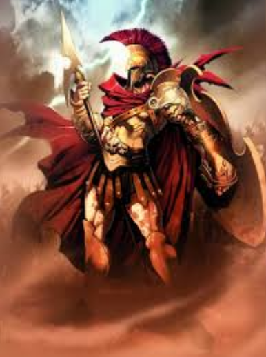
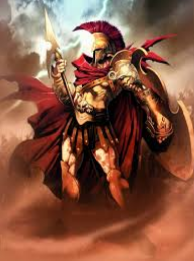

Greziar mitologian, Ares (grezieraz Ἄρης [árɛːs]) gudaren —edo, zehatzago esanda, bortizkeriaren— olinpiar jainkoa izan zen.
Aresek Zeus eta Hera zituen gurasoak. Iliadan agertutakoa, erromatar mitologian, Marte bere baliokidea izan zen. Homeroren testuei erreparatuz, gudaren olinpiar jainkoa ezezik, borrokarako gauza ere bazela ulertzen da. Indar akiezina zuen eta balentriaren ikurra zen, gizontasunaren ikurra, eta baita olinporen eta ejerzitoen defendatzailea, gizon zuzenen ikurra eta ahulen laguntzailea ere.
Gizonen ikur gisa hainbat bikotekide izan zituen kontakizun ugaritan banaturik. Gutxi gorabehera hogeita hamar bikote izan zituen eta guztira hirurogei ume inguru. Hauen artean, Eros, Harmonia, Fobos, Deimos eta Amazonak daude. Bikoteen artean, badirudi Afrodita izan zela bikotekide egonkorrena, amodioaren eta edertasunaren jainkosa. Berak gaixoaldietan lagundu zion eta gudan aliatua izan zuen.
Atena ere gudaren jainkosa izan zen baina estrategia eta taktikari lotzen zitzaion, gudaldiari berari baino. Borrokaren zentzuan, argi dago Ares zela jainko garrantzitsuena arlo honetan. Badirudi Helade iparraldean jaio zela, Traziako eremuetan eta hara joan zen Hefesto, Afroditaren senarra, emaztea Aresekin zebilela jakin zuenean. Izan ere, Afroditak behin baino gehiagotan engainatzen zuen bere senargaia.
Troiako gudan bi bandoen alde borroka egin zuen, bien balentriak ospatuz. Bere eskua, izurrien eta gaixotasunen atzean zegoela ere esaten zen eta horregatik, jainko askok Ares gorrotatzen zuten, bere gurasoek barne.
 
